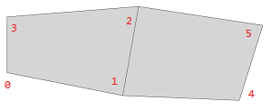
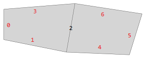
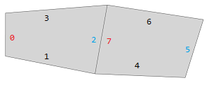
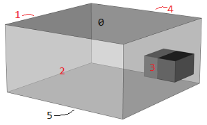

comp function
component, scopeAlignment, selector, operator These parameters are the same as for the comp operation.
expression floatstringbool Expression evaluated per component. All expressions must be of the same type.
Returns an array that contains the evaluated expression for each component.
Like the comp operation, the comp function divides a shape into topological components with respect to component, selector, and operator. In contrast to the operation, the function does not process the selected components with shape operations. Instead, a functional expression is evaluated on each selected component shape and the results are returned as an ordered array.
Related
Explanatory examples
Vertices | Comp shape attributes

const array = comp(v) { all : comp.index }
Lot --> print(array)
(6)[0,1,2,3,4,5]
A shape is split into all six of its vertices. Each vertex component is asked for its component index. These values are then organized in vertex-index order.
Edges | Scope shape attributes

edgeLength = scope.sx
const array = comp(e) { border : edgeLength }
(7)[7,15,0,17,15,10,16]
The shape with seven edges is split into its six border edges. Each selected edge component is asked for its length via its scope attribute. Edge 2 is not selected and is therefore inserted with the default value 0.
Face edges | Combine shape operator

const array = comp(fe) { front : comp.sel + comp.index |
back = str(comp.index) }
(8)[front0,,0,,,0,,front1]
The shape with eight face edges is split into its two front face edges and into a combined shape consisting of two back face edges. The second expression is evaluated only once, but its return value is inserted at all respective back-edge indices. Unselected edges are inserted with the default value "".
Faces | Occlusion query

const array = comp(f) { side = touches }
(6)[false,true,true,true,true,false]
The shape with six faces is split into one shape consisting of four side faces. An occlusion query is evaluated once and the result is inserted for all side faces. The remaining faces are inserted with the default value false.
See the setback operation for further applications.
The returned array has these properties: